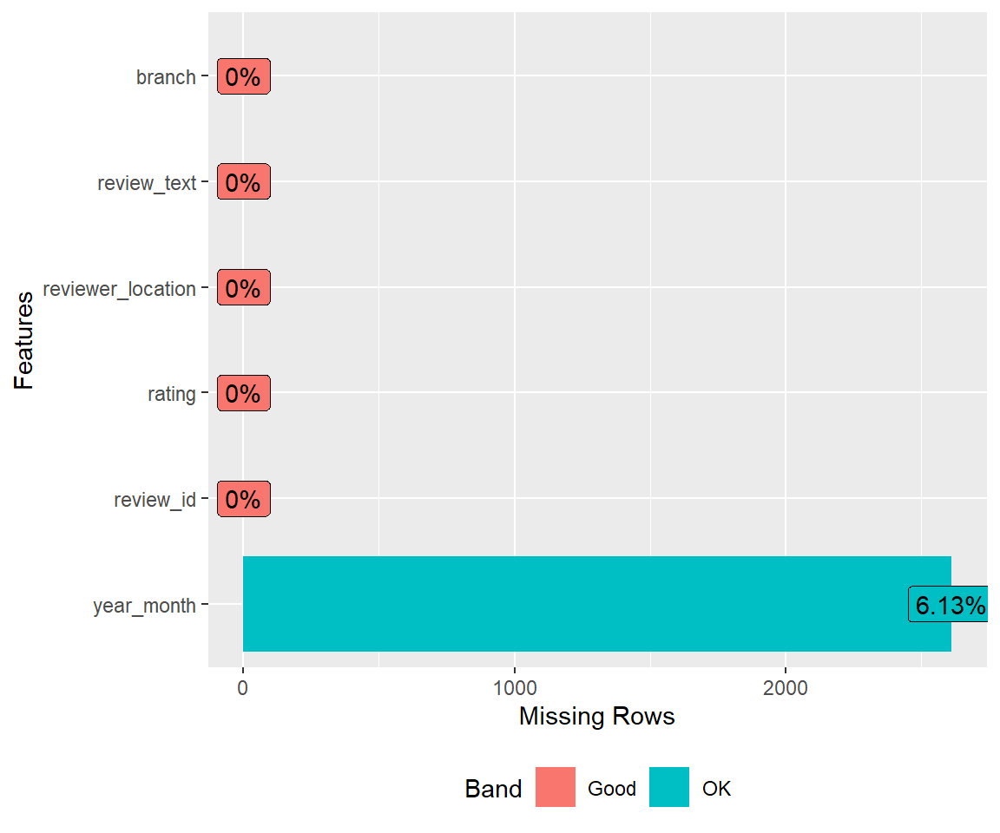
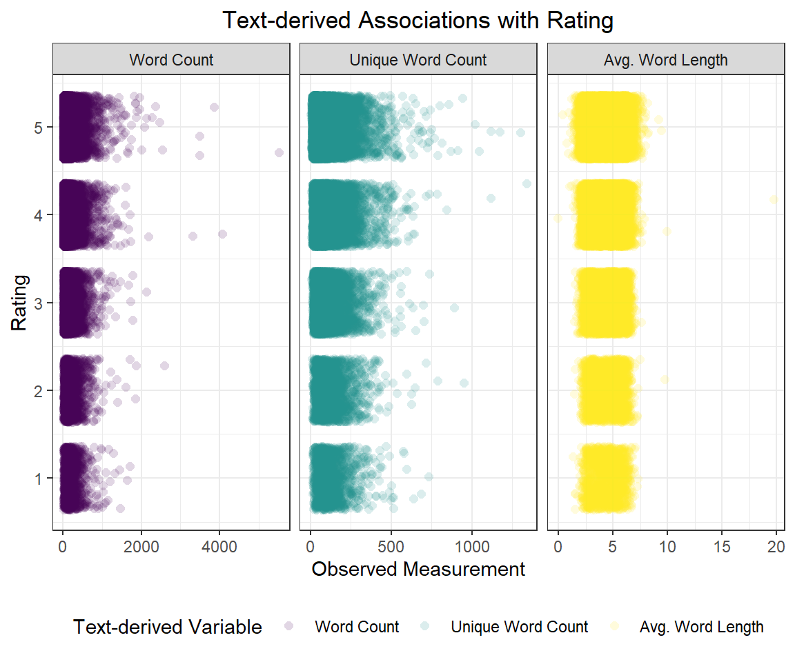

#Save gt
#Create a figures directory and save the gt as a .png in there
dir.create("./figures/") #create directory
gtsave(table.gt, "./figures/gt_table.png") #save it
#Display the .png inline with Week 4: Visualization I
Data Visualization I
Today we are going to –
- Learn how to wrangle and visualize data to answer real world questions
- Learn what separates a good plot/table from a bad plot/table
- Learn how to make the good kind
But before we discuss how, we ought to ask ourselves what is the fundamental purpose of a data visualization?
A data visualization is nothing more or less than a communication tool, and a good visualization tells a compelling story. One which –
- Explains a phenomenon
- Supports a hypothesis
- Persuades us of an argument
- Answers or investigates a real world question of interest by
- Drawing inference from the past
- Predicting the future
How do we tell a compelling story with data?
If we wrangle, clean, and reshape our data appropriately, pretty easily!
- The four keys to good data visualizations are
1. Clean, wrangled, tidy data
2. Appropriate choice of communication tool or figure type
3. Clear, organized, self-explanatory structure
4. Attention to detail
\(~\)
\(~\)
Fundamentals
Visualization with ggplot()
ggplot’s, much like onions, have layers –

Unlike an onion, however, the layers in ggplot are more analogous to the layers of a hearty sandwich –
The ggplot sandwich
- Meat – mapping & geom(s)
DataExplorer\(\longrightarrow\) Data Wrangling I \(\longrightarrow\) tidy data%>%ggplot(aes(x = , y =, colour = , fill = , group = , size = , ...)) +geom_point, geom_line, geom_histogram, geom_density, geom_smooth, ...
- Fixings – aesthetics & facets
alpha,size,shape,linetype,span,jitteretc.facet_wrap(~ v1 + v2, ncol = , nrow = , scales = "free?")
- Sauce – theme & colour palette
ggthemesscale_colour_viridiscolourblind friendlyRColorBrewerpaleteertheme(axis.text.x = element_text(angle =, vjust =, hjust =, size = ...))
- Bread – scale/axes, titles, names
scale_x_continuous,scale_x_date_time,..,_discrete,scale_y_...labs(x = , y = , title = , subtitle = , caption = )
\(~\)
\(~\)
Tables with gt()
gt is like the ggplot of tables, but functions differently with different syntax (due to being developed much later than ggplot). gt’s also have layers, except unlike ggplot, the order of aesthetics doesn’t matter – which implies that gt is exactly like an onion! Note- ggplot is piped with + and gt with %>% (like everything else).
While the full functionality of gt is expansive, and greater detail / function description can be found here and here, today we’re going to cover the 4-5 main features you’ll need to generate a beautifully layered gt onion.
\(~\)
The gt onion
- Layer I –
gt(data, rowname_col = "rowname", groupname_col = dplyr::group_vars(data)) - Layer II – Titles & headers
tab_header(title, subtitle)(main title, subtitle)tab_spanner(data, label, columns)(spans columns)
- Layer III – Colours, footnotes, source notes
data_color(columns = , colors = scales::col_numeric(palette = , domain =))tab_footnote(footnote = "", locations = cells_column_labels(columns = )))tab_source_note(source_note = "")
- Layer IV – Style & Options
\(~\)

\(~\)
Warning: Note about gt & github_documents
Not everything that normally works in .html will work in github_documents; and one of those things is gt()’s displaying properly. To get around that, we’ll have to gtsave our gt's as a .png and call it directly from Rmarkdown like so –
\(~\)
\(~\)
Telling a Story
Today, the story we are going to tell is one of fantasy, quite literally, as it pertains to customer reviews from the most magical place(s) on earth: Disney Land
These data were acquired from Kaggle and describe ~42,000 customer reviews from Disneyland(s) in California, Hong Kong, and Paris, extracted from posts on Trip Advisor. The data may be found on Canvas here.
Step 1. Read, clean and get comfortable
First, we utilize DataExplorer to
- Conduct an initial exploration to inform our cleaning and tidying
- Generate potential Data Science questions
- Re-write our pipe to read, clean, and tidy appropriately
#Read data and do some initial cleaning
disney.df <- read_csv("./data/disneyland_reviews.csv",
show_col_types = FALSE,
na = "missing") %>%
janitor::clean_names()
#Explore a little with DataExplorer
#Table of general info
DataExplorer::introduce(disney.df)# A tibble: 1 × 9
rows columns discrete_columns conti…¹ all_m…² total…³ compl…⁴ total…⁵ memor…⁶
<int> <int> <int> <int> <int> <int> <int> <int> <dbl>
1 42656 6 4 2 0 2613 40043 255936 3.40e7
# … with abbreviated variable names ¹continuous_columns, ²all_missing_columns,
# ³total_missing_values, ⁴complete_rows, ⁵total_observations, ⁶memory_usage#A random few observations
set.seed(36)
sample <- sample(1:nrow(disney.df), 10)
#Display
disney.df %>%
slice(sample)# A tibble: 10 × 6
review_id rating year_month reviewer_location review_text branch
<dbl> <dbl> <chr> <chr> <chr> <chr>
1 326116517 4 2015-10 United States My family had a good ti… Disne…
2 561114590 4 2018-2 Indonesia I'll start by reminding… Disne…
3 65297363 5 <NA> Canada I just got back from a … Disne…
4 174308145 3 2013-8 United Kingdom The two parks are withi… Disne…
5 155788938 5 <NA> Belgium The only ride that REAL… Disne…
6 421639027 5 2016-3 Philippines I enjoyed our whole day… Disne…
7 126485364 5 2012-3 United States After visiting Disney W… Disne…
8 202672130 4 2014-4 Australia Having not been to a Di… Disne…
9 574949379 5 2018-4 United States Great fun for first or … Disne…
10 250866714 5 2015-1 United States I actually went Tuesday… Disne…#Plot str() (names and types)
DataExplorer::plot_str(disney.df)We note here that there are NAs in year_month, they just aren’t labeled appropriately. The year_month and branch variables need to be mutated with stringr (or lubridate). Some variable names still require more tidying and variable types need to be fixed appropriately.
#Plot missing
DataExplorer::plot_missing(disney.df)
#Plot categorical
DataExplorer::plot_bar(disney.df)#Plot conintuous distributions
DataExplorer::plot_histogram(disney.df)We also note that the number of California reviews is nearly double that of Hong Kong, and ~35% larger than that of Paris. In addition, the distribution of reviews is heavily left-skewed, with mostly 4 and 5 star reviews and very few 1’s, 2’s, and 3’s.
\(~\)
\(~\)
Step 2. Wrangle the data
Next, we re-write our data wrangling pipeline to include the necessary steps to clean, transform, rename, and tidy thse data to answer any potential questions of interest. This includes
- Declaring NA =
r“missing”` - Renaming redundant
review_from features
- Extracting/creating time variables (numeric & factor)
- Creating text analysis variables like word count, avg. length, etc.
- Retaining only the features relevant to our analysis
- Checking for unique observations / multiple reviews per ID
- Retaining only unique/valid observations
#Read data and do some initial cleaning
disney.df <- read_csv("./data/disneyland_reviews.csv",
na = c("missing"),
show_col_types = FALSE) %>%
janitor::clean_names() %>%
rename(
id = review_id,
text = review_text, #trimming unnecessary review_
location = reviewer_location
) %>%
mutate( #Time
id = as.factor(id),
date = lubridate::ym(year_month), #Cleaning up time as date, y/m factors
year = lubridate::year(date) %>% #See the lubridate package
as.factor(),
month = month.name[lubridate::month(date)] %>%
as.factor()
) %>%
mutate( #Text analysis
n_words = str_split(text, " ") %>% #proxy for number of words
map_dbl(length),
avg_length = str_split(text, " ") %>% #proxy for average length
map(str_length) %>%
map_dbl(mean),
n_unique = str_split(text, " ") %>% #proxy for no. unique words
map(unique) %>%
map_dbl(length),
branch = str_split(branch, "_") %>% #extracting branch w stringr
map_chr(2) %>%
as.factor() %>%
fct_recode("Hong Kong" = "HongKong") %>%
fct_relevel("California", "Paris")
) %>%
dplyr::select(id, rating, location, branch, everything(), -c(year_month, text))
#Let's check it out now
disney.df %>%
slice(sample)# A tibble: 10 × 10
id rating locat…¹ branch date year month n_words avg_l…² n_uni…³
<fct> <dbl> <chr> <fct> <date> <fct> <fct> <dbl> <dbl> <dbl>
1 3261165… 4 United… Calif… 2015-10-01 2015 Octo… 120 4.25 91
2 5611145… 4 Indone… Hong … 2018-02-01 2018 Febr… 126 4.71 93
3 65297363 5 Canada Calif… NA <NA> <NA> 160 4.25 112
4 1743081… 3 United… Calif… 2013-08-01 2013 Augu… 120 4.18 85
5 1557889… 5 Belgium Paris NA <NA> <NA> 34 4.76 30
6 4216390… 5 Philip… Hong … 2016-03-01 2016 March 38 4.82 31
7 1264853… 5 United… Calif… 2012-03-01 2012 March 117 4.32 85
8 2026721… 4 Austra… Hong … 2014-04-01 2014 April 140 4.34 103
9 5749493… 5 United… Calif… 2018-04-01 2018 April 85 4.35 69
10 2508667… 5 United… Calif… 2015-01-01 2015 Janu… 84 4.26 76
# … with abbreviated variable names ¹location, ²avg_length, ³n_uniqueNote that not every observation is independent, as 20 ID’s submitted 2 reviews –
#Repeated id data frame
disney.df %>%
pull(id) %>%
fct_count() %>%
arrange(desc(n)) %>%
filter(n > 1)# A tibble: 20 × 2
f n
<fct> <int>
1 121568004 2
2 121570980 2
3 121578357 2
4 121580686 2
5 121586148 2
6 121615136 2
7 121615246 2
8 129207323 2
9 129214104 2
10 129231609 2
11 164830205 2
12 164862064 2
13 166730734 2
14 166753649 2
15 166754595 2
16 166784597 2
17 166787525 2
18 166787635 2
19 168489234 2
20 226905150 2#Extract only the first occurance of these id's
keep_index <- disney.df %>% pull(id) %>% match(unique(.), .)
#Retain only the first occurance (final df 20 less obs)
disney.df <- disney.df %>% slice(keep_index)I went back and cross-referenced these repeated ID’s with their reviews and they are indeed ‘true’ duplicates even though the computer hasn’t recognized that due to small changes in punctuation/spacing/text parsing. Above is a small bit of code to keep only the first occurence of each review ID by index.
\(~\)
\(~\)
Step 3. Ask some real world questions of interest
Some natural questions we may ask of these data, given our cleaning and transformation, are –
3.1 What are the top 5 reviewer location(s) of origin by branch?
3.2 What is the average rating by branch?
- Has the average rating changed over time?
- Does the avg. rating vary within each branch by top 5 location? vs. other?
3.3 Is there any association between rating and text analysis variables?
\(~\)
\(~\)
Step 4. Do data science to answer these questions
Activity 3.1 What are the top 5 reviewer location(s) of origin by branch?
#gt, need the paletteer package for colours
if (!require("paleteer")) {
install.packages("paleteer")
}#Make a table of top 5 w/ dplyr
top_5.df <- disney.df %>%
group_by(branch, location) %>%
summarise(
N = n()
) %>%
arrange(branch, desc(N)) %>%
group_by(branch) %>%
slice(1:5)
#Display table with gt
top_5.df %>%
rename(
`# Reviews` = N,
`Location of Origin` = location) %>%
gt() %>%
tab_header("Top 5 Reviewer Locations by Branch") %>%
data_color(
columns = `# Reviews`,
colors = scales::col_numeric(
palette = c("white", my_purple),
domain = c(0, 13000)
)
) %>%
tab_footnote(
footnote = "Reviews extracted from Trip Advisor 2010-2019",
locations = cells_column_labels(
columns = `# Reviews`
)
)| Top 5 Reviewer Locations by Branch | |
| Location of Origin | # Reviews1 |
|---|---|
| California | |
| United States | 12335 |
| Australia | 2447 |
| Canada | 1842 |
| United Kingdom | 1019 |
| New Zealand | 527 |
| Paris | |
| United Kingdom | 7992 |
| United States | 1330 |
| Australia | 595 |
| Ireland | 430 |
| India | 293 |
| Hong Kong | |
| Australia | 1634 |
| India | 1082 |
| Philippines | 991 |
| United States | 877 |
| Singapore | 849 |
| 1 Reviews extracted from Trip Advisor 2010-2019 | |
\(~\)
Activity 3.2 What is the average rating by branch?
disney.df %>%
group_by(branch) %>%
summarise(
avg_rating = mean(rating)
) %>%
arrange(desc(avg_rating)) %>%
rename(
Branch = branch,
`Average Rating` = avg_rating
) %>%
gt() %>%
tab_header("Average Rating by Branch") %>%
tab_footnote(
footnote = "Reviews extracted from Trip Advisor 2010-2019",
locations = cells_column_labels(
columns = `Average Rating`
)
)| Average Rating by Branch | |
| Branch | Average Rating1 |
|---|---|
| California | 4.405 |
| Hong Kong | 4.204 |
| Paris | 3.960 |
| 1 Reviews extracted from Trip Advisor 2010-2019 | |
\(~\)
Activity 3.2.1 Has this average rating changed over time?
disney.df %>%
group_by(branch, date) %>%
summarise(
avg_rating = mean(rating)
) %>%
drop_na() %>%
ungroup() %>%
mutate(branch = fct_reorder(branch, avg_rating, .desc = TRUE)) %>%
ggplot(aes(x = ymd(date), y = avg_rating, colour = branch, fill = branch)) +
stat_smooth(alpha = 0.2,
size = 1.2,
method = "loess",
formula = "y ~ x",
span = 0.2,
se = FALSE) +
geom_point(alpha = 0.24,
position = "jitter",
size = 2,
shape = 16) +
labs(
x = "Year",
y = "Average Rating",
title = "Average Rating by Branch from 2010-2019"
) +
annotate(geom = "text",
x = ymd("2013-07-1"),
y = 4.66,
label = "Mean Trend",
#family = "AvantGarde",
colour = my_purple) +
scale_colour_viridis_d("Disneyland Branch") +
scale_fill_viridis_d("Disneyland Branch") +
scale_x_date(
date_breaks = "1 year",
date_minor_breaks = "1 year",
date_labels = "%Y"
) +
theme(axis.text.x = element_text(angle = 45,
vjust = 1.24,
hjust = 1.2,
size = 11),
axis.text.y = element_text(size = 11)) +
ylim(c(3, 5))\(~\)
Activity 3.2.2 Does the avg. rating vary within each branch by top 5 location? vs. other?
#Display table with gt
disney.df %>%
group_by(branch, location) %>%
summarise(
avg_rating = mean(rating),
N = n()
) %>%
arrange(branch, desc(N)) %>%
group_by(branch) %>%
slice(1:5) %>%
arrange(branch, desc(avg_rating), desc(N)) %>%
rename(
`# Reviews` = N,
`Average Rating` = avg_rating,
`Location of Origin` = location) %>%
gt() %>%
tab_header("Top 5 Reviewer Locations by Branch") %>%
data_color(
columns = `# Reviews`,
colors = scales::col_numeric(
palette = c("white", "red"),
domain = c(0, 13000)
)
) %>%
data_color(
columns = `Average Rating`,
colors = scales::col_numeric(
palette = c("blue", "white", "red"),
domain = c(3.2, 4.6)
)
) %>%
tab_footnote(
footnote = "Reviews extracted from Trip Advisor 2010-2019",
locations = cells_column_labels(
columns = `Average Rating`
)
)| Top 5 Reviewer Locations by Branch | ||
| Location of Origin | Average Rating1 | # Reviews |
|---|---|---|
| California | ||
| Australia | 4.539 | 2447 |
| New Zealand | 4.488 | 527 |
| Canada | 4.412 | 1842 |
| United States | 4.394 | 12335 |
| United Kingdom | 4.290 | 1019 |
| Paris | ||
| Ireland | 4.260 | 430 |
| India | 4.215 | 293 |
| United Kingdom | 4.016 | 7992 |
| United States | 3.735 | 1330 |
| Australia | 3.649 | 595 |
| Hong Kong | ||
| India | 4.512 | 1082 |
| Philippines | 4.403 | 991 |
| Australia | 4.213 | 1634 |
| United States | 4.146 | 877 |
| Singapore | 4.046 | 849 |
| 1 Reviews extracted from Trip Advisor 2010-2019 | ||
Activity 3.3 Is there any association between rating and text analysis variables?
disney.df %>%
pivot_longer(
cols = contains(c("n_", "avg")),
names_to = "text_var",
values_to = "measurement"
) %>%
mutate(
text_var = case_when(
text_var %in% "n_words" ~ "Word Count",
text_var %in% "n_unique" ~ "Unique Word Count",
TRUE ~ "Avg. Word Length"
) %>%
as_factor()
) %>%
ggplot(aes(x = measurement, y = rating, colour = text_var)) +
# stat_smooth(alpha = 0.2,
# size = 1.2,
# method = "loess",
# span = 1,
# se = FALSE) +
geom_point(alpha = 0.16,
position = position_jitter(w = 2, h = 0.36),
size = 2,
shape = 16) +
labs(
x = "Observed Measurement",
y = "Rating",
title = "Text-derived Associations with Rating"
) +
scale_colour_viridis_d("Text-derived Variable") +
facet_wrap(~ text_var, scales = "free_x")
disney.df %>%
filter(
n_words <= 1000,
n_unique <= 750,
avg_length <= 6,
avg_length >= 3
) %>% #to handle outliers rigorously
pivot_longer(
cols = contains(c("n_", "avg")), #Turning text analysis vars from wide to long
names_to = "text_var",
values_to = "measurement"
) %>%
mutate(
text_var = case_when(
text_var %in% "n_words" ~ "Word Count",
text_var %in% "n_unique" ~ "Unique Word Count", #Recoding variable w meaningful names
TRUE ~ "Avg. Word Length"
) %>%
as_factor()
) %>%
ggplot(aes(x = measurement, colour = as.factor(rating), fill = as.factor(rating))) +
geom_density(adjust = 2, alpha = 0.44, position = "stack") +
labs(
x = "Observed Measurement",
y = "Rating 1-5",
title = "Text-derived Associations with Rating"
) +
scale_colour_viridis_d("Rating") +
scale_fill_viridis_d("Rating") +
facet_wrap(~ text_var, scales = "free")
ggridges
#Load the ggridges package for density plots
if (!require("ggridges")) {
install.packages("ggridges")
}
#Load data
library(ggridges)disney.df %>%
filter(
n_words <= 1000,
n_unique <= 750,
avg_length <= 6,
avg_length >= 3
) %>%
pivot_longer(
cols = contains(c("n_", "avg")),
names_to = "text_var",
values_to = "measurement"
) %>%
mutate(
text_var = case_when(
text_var %in% "n_words" ~ "Word Count",
text_var %in% "n_unique" ~ "Unique Word Count",
TRUE ~ "Avg. Word Length"
) %>%
as_factor(),
rating = as.factor(rating) %>%
fct_rev()
) %>%
ggplot(aes(x = measurement, y = rating, colour = rating, fill = rating)) +
# geom_histogram(aes(y = stat(density)),
# binwidth = 10, colour = "black",
# alpha = 0.24) +
geom_density_ridges2(adjust = 2,
alpha = 0.44,
scale = 2) +
stat_summary(fun = mean, geom = "point", size = 6, shape = "|") +
labs(
x = "Observed Measurement",
y = "Rating 1-5",
title = "Text-derived Associations with Rating"
) +
scale_colour_viridis_d("Rating (Mean |)") +
scale_fill_viridis_d("Rating (Mean |)") +
facet_wrap(~ text_var, scales = "free")